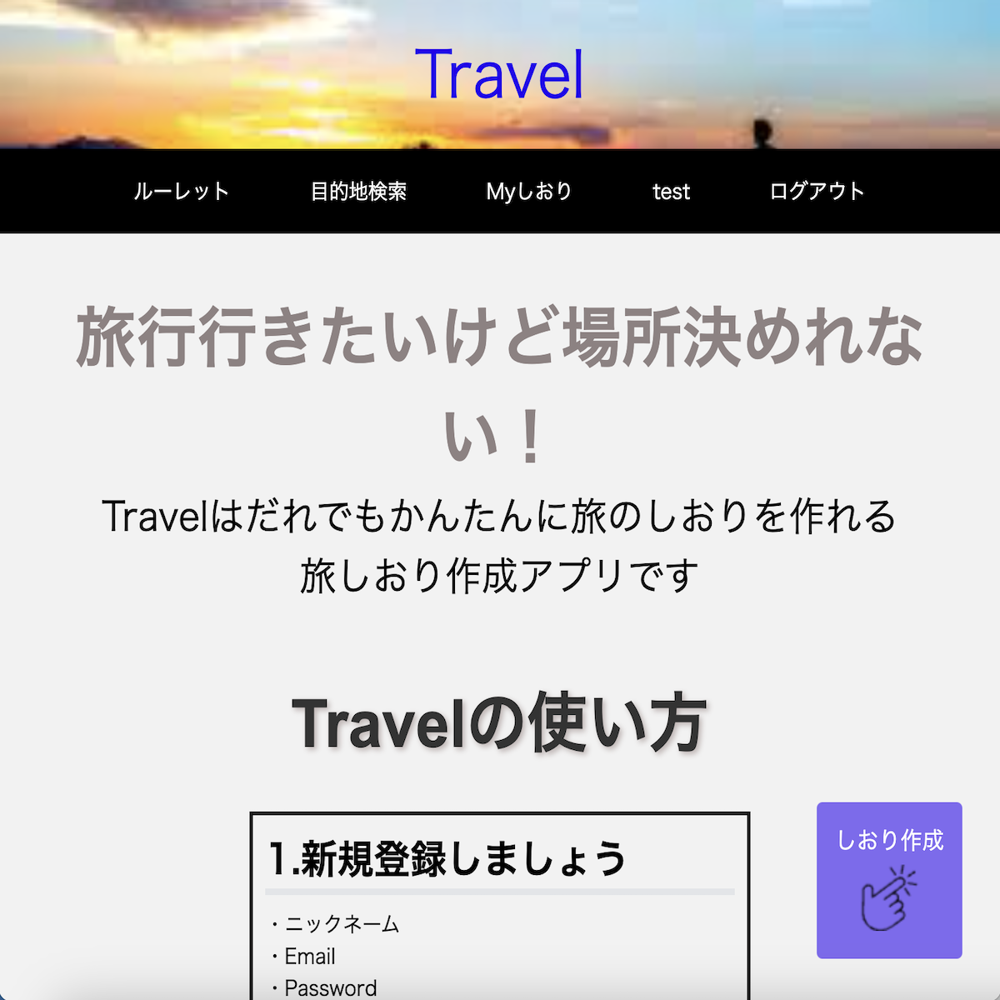
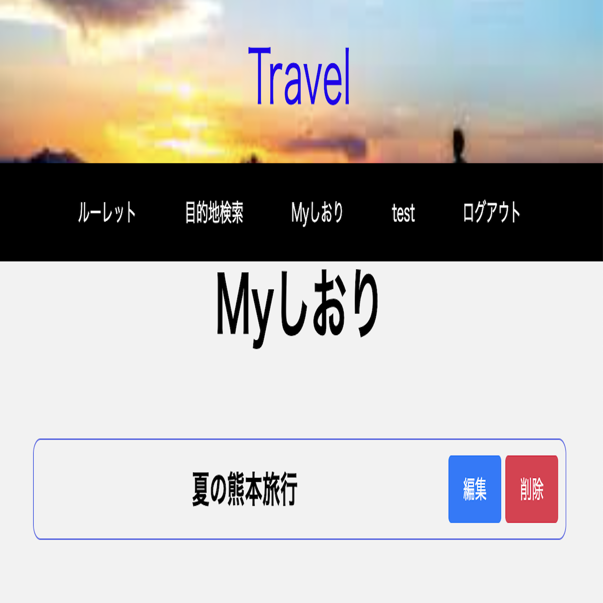

Travel（旅しおり）

開発環境
Ruby / Ruby on Rails / MySQL / GitHub / AWS / JavaScript / Visual Studio Code
-
概要
制作時間 250時間 URL http://52.192.74.145 -
動作テスト
テスト用アカウント
mail test3@test.com PASS T123456
OUTLINEアプリケーションの概要
オリジナルアプリケーションとして、旅しおりを作れるアプリを開発しました。
主な機能は、ユーザー登録機能、ルーレット機能、しおり作成機能です。
トップページにアクセスすると、アプリの使い方の説明を読むことができます。
ユーザー登録をすると、ルーレット機能と検索機能、しおり作成機能を使えるようになります。
編集機能もあり好きなタイミングで編集でき閲覧することも可能です。
-
開発に至った経緯
しおり作成アプリはたくさんあるものの検索機能やルーレット機能など場所を選ぶことの手助けをしてくれるアプリはあまりないなと感じました。
なので今アプリに足りない部分を補ったアプリを作成しようと思いました。旅行中に使いやすく、直感的に操作できるアプリを提供したいと思った。
カリキュラムで習った知識を深めるためにアプリの作成を行いました。
-
開発で工夫したこと
UI/UXに関して意識して作成を行いました。シンプルな設計を心がけて作成したので初めての人でも直感的に使用することができると思います。
目的地検索機能を実装することにより目的地の詳細な住所やレストランなど検索することが可能になりました。
-
今後実装したいと思っていること
レスポンシブ対応にもしていきたいと考えています。理由としてはスマホで利用することが多いと思うため。現状の設計ではスマホに対応できておらずビューの崩れが少し起きている状態です。
シェア機能の実装も考えています。他の人が作ったしおりも見ることができるようにすることで自分の知らない旅を知るきっかけを作ることができると思っているからです。